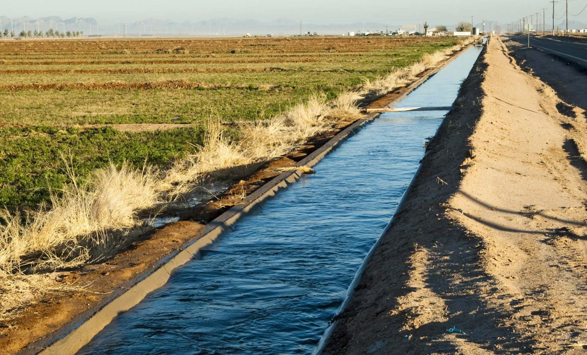
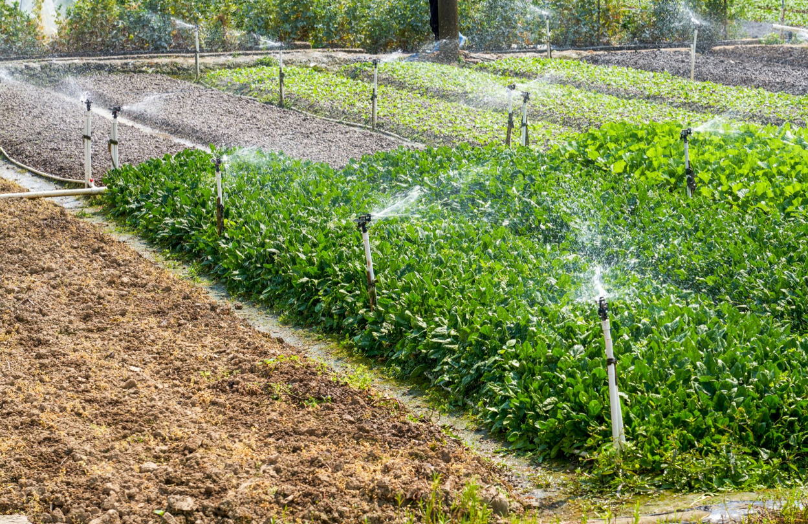
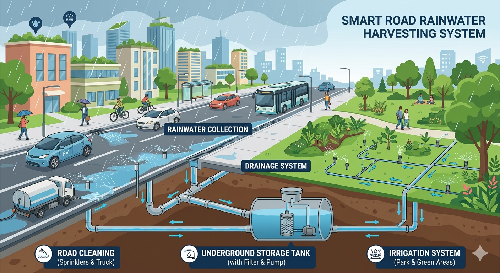

About Smart Road System
🌍 Project Overview
The Smart Road System is an innovative infrastructure solution that collects rainwater, stores it underground, and reuses it for automatic road cleaning and plant irrigation. This reduces water wastage and improves urban cleanliness and sustainability.
System Design




The system includes drainage channels, underground storage, and a distribution system connected to cleaning and irrigation units.
System Features
This project integrates civil engineering infrastructure with a simple
software-based control system to create a smart and sustainable road.
The civil engineering components include rainwater collection through
road drainage, underground storage reservoirs, and a distribution
network for cleaning and irrigation.
The software system provides a web-based dashboard that simulates
system behavior, including water level monitoring, rain detection,
and automated control of cleaning and irrigation processes.
Together, these components demonstrate how traditional infrastructure
can be enhanced using basic automation and smart monitoring techniques.
🧩 Key Components
- Collection: Intake grates and trapezoidal reservoirs
- Storage: Underground rectangular reservoir
- Distribution: Pipes and spray nozzles
- Control: Sensors and automation system
- Energy: Solar panels and dynamo system
🔬 Innovation
Unlike traditional systems, this project integrates water harvesting, automated cleaning, irrigation, and renewable energy into one system.
⚙️ How the System Works
- Rainwater is collected through road drainage systems.
- Water is stored in underground reservoirs.
- Sensors detect dust and soil moisture.
- Water is automatically used for cleaning and irrigation.